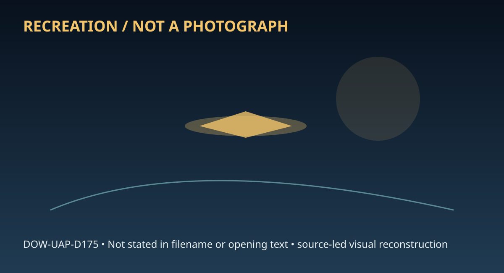

Release 07 / archival case file / DOW-UAP-D175
D175 Baass Self Assessment Of Uap Analysis Capabilities November 2010
This d175 baass self assessment of places a report, analysis, personnel thread in a 2010 Utah Ranch record.
ID: DOW-UAP-D175
Filename:
DOW-UAP-D175-BAASS_Self-Assessment_of_UAP_Analysis_Capabilities_November_2010.pdfDate marker: 2010
Location: Utah Ranch
Agency or collection signal: Air Force
Pages read: 141

RECREATION / NOT A PHOTOGRAPH. The diagram is an interpretive editorial aid, not source imagery.
What this document says
The opening page's extracted text begins: “Summary Report on BAASS UAP Analysis Capabilities November 23, 2010”
Across the 141 pages, the recurring terms are report, analysis, personnel. Those details belong to this file, not to a generic case template. Page-level reading follows:
- Page 1: Summary Report on BAASS UAP Analysis Capabilities November 23, 2010
- Page 2: Summary Report on BAASSUAP Analysis Capabilities November 23, 2010
- Page 3: TABLE OF CONTENTS pg. LIST OF FIGURES ........................................................................................................................ 4 LIST OF TABLES .......................................................................................................................... 9 1. EXECUTIVE SUMMARY ......................................
- Page 4: USO ANSYS Multiphysics Acoustics Input File Example .................................................... 105 ATTACHMENT II - "TIC TAC" CFD CONTOUR PLOTS FOR PRESSURE, ATTACHMENT III - RIGHT CIRCULAR CYLINDER CFD CONTOUR PLOTS UAP ANSYS Multiphysics RCS Input File Example ............................................................ 112 TEMPERATURE AND MACH NU
- Page 5: LIST OF FIGURES pg. Figure 1. The UFO Pattern: A Condensed Statement ofRepeated Observations ........................ 21 Figure 2. Lockheed Martin Skunk Works SR-71 Black Bird ....................................................... 22 Figure 3. Lockheed F-117 Nighthawk Stealth Fighter ................................................................. 22 Figur
- Page 6: Figure 29. User Generated Cut Analysis Plane ............................................................................ 53 Figure 30. Animated Result, Fluid 2 Volume Fraction................................................................ 54 Figure 31. Total Pressure Around UAP ...............................................................................
- Page 7: Figure 53. Steady State Imaginary Component ofPressure (Pa) as a Function ofRadial Distance (m) Plot for 10,000 Hz with 25 Elements per Wavelength in Water....................................................................................................................... 80 Figure 54. Steady State Magnitude ofPressure (Pa) as a Function ofRadial Distance
- Page 8: Figure 77. Tic Tac Pressure at 1/6 Scale, Air Temperature 223K and 500 mph with Mixed Inlet and Subsonic Outlet ...................................................................... 122 Figure 78. Tic Tac Temperature at 1/6 Scale, Air Temperature 223K and 500 mph Figure 79. Tic Tac Mach Number at 1/6 Scale, Air Temperature 223K and 500 mph Figure 80. Tic Ta
- Page 9: Figure 100. Cylinder Mach Number at 1/6 Scale, Air Temperature 223K and 400 mph with Subsonic Inlet and Subsonic Outlet.. ............................................................. 133 Figure 101 . Cylinder Pressure at 1/6 Scale, Air Temperature 223K and 500 mph Figure 102. Cylinder Temperature at 1/6 Scale, Air Temperature 223K and 500 mph Figure 103. Cy
- Page 10: LIST OFTABLES pg. Table 1. Mach Regimes ................................................................................................................ 32 Table 4. Normalized radar Cross Section for a 10 m Metallic Sphere with a 1 m Table 5. Normalized radar Cross Section for a 10 m Metallic Sphere withal m Table 2. Velocities and Accelerations ofTic Tac fo
- Page 11: 1. EXECUTIVE SUMMARY The purpose of this r,eport is to summarize the field data collection, in-house databases and computational capabilities that currently reside at Bigelow Aerospace Advanced Space Studies (BAASS) for the study of advanced aerospace technology. Between 2008 and 20 IO BAASS was contracted by the Defense Warning Office of the Defense Intelli
- Page 12: was contracted to the Defense Intelligence Agency (DIA) in 2008 to investigate and analyze the possibility of a credible threat posed by UAPs. To accomplish this mission, BAASS over the past two years has focused on developing three separate resources, each unique to the study of UAP: 1) to obtain the most comprehensive suite of portable field sensors and pe
- Page 13: BAASS' work scope. BAASS' vision is to identify and acquire disruptive or discontinuous technologies that will fonn the basis of aerospace and defense applications through the year 2050, as well as those that pose potential threats to national security. The company goal is to become a major entity in the research and development of future aerospace propulsio
- Page 14: _ 2. INTRODUCTION 2.1 lliSTORICAL EVENTS AND STUDIES Disc, triangle, cigar and bell- shaped flying objects have been reported and documented on a global basis for millennia. The sighting by l1843(a)(2) Ion June 24, 1947 in the state of Washington garnered unprecedented global media attention and began the modern UFO era. While flying near Mt. Rainier, he obs
- Page 15: Project Grudge attempted to give each and every case a solution or an identifier tag. Grudge existed in various form and name until project completion in March 1952. The final Project Grudge report stated 22% of cases were categorized as unidentified, 69% identified, and 9% contained insufficient infonnation to categorize. In March 1952 Project Blue Book rep
- Page 16: Research performed through theoretical and computational applications, as well as modeling of components of non-conventional propulsion systems is under way to provide for future development of vehicles capable of operating in the atmosphere, under water and in space. BAASS research intends to provide innovative approaches and concepts for aircraft, propulsi
- Page 17: Computational Fluid Dynamics (CFO), Heat Transfer, Nuclear Engineering, Electromagnetics and Radio Frequencies (RF), Theoretical and Computational Physics, Biological Sciences and Chemistry. 2.3.2 ANSYS Multiphysics FEA The ANSYS Workbench platform is a powerful multi-domain simulation environment that harnesses the core physics from ANSYS, enables their int
- Page 18: 2.3.3.1.5 ATT PVS-7, Night Vision Devices Seven A TT PVS-7, Nmght Vision Devices - military quality, state-of-the-art night vision devices. 2.3.3.1.6 Oasys Universal Thermal Monocular (UTM) This device is a ruggedizcd thermal imaging and designation system. It includes a digital magnetic, both still and video capture capability as well as a digital PC interf
- Page 19: 2.3.3.2 Scientific Equipment 2.3.3.2.1 Veho VMS-001 200X 1.3 Megapixel Digital USB Microscope This instrument is a very portable (4.4 x 1.3 inches) digital microscope which expands the capability of the field! investigators. The microscope allows detailed images to be taken and connects directly to a laptop. Illumination is via 4 built in white LED lights. 2
- Page 20: 2.3.3.6 Hardware for ANSYS Workbench Platform The research and work performed by BAASS ranges from technical design and prototyping, all the way up to advanced theoretical and computational studies of partial differential equations describing multiphysics problems. An expandable twelve core Hewlett Packard server with 48 GB of RAM and I TB of storage is used
- Page 21: The BAASS Data Warehouse is an electronic repository for historical, ongoing, and future UAP reporting and investigations. The Data Warehouse is designed to facilitate sophisticated analyses and data mining to improve our understanding ofthe extent, structure, and frequency of UAP, as well as their potential correlation to known physical, environmental, biol
- Page 22: 3. TYPES OF UAPS OBSERVED NASA aeronautical engineed 1843(a)(2) Imade important inroads into attempts to delineate some quantitative characteristics ofUFO perfonnance by close examination of, and derivation of numerical parame • . ligated sentinel UFO casesP843(a)(2) I ln addition, computer scientist AAP Person 5 has attem ted to compute estimates of optical
- Page 23: shaped UAPs which appear to hover and/or accelerate at rapid rates from a stationary position have been harder to explain considering the inherently poor aerodynamic properties of these objects. It is this latter subset of UAP reports that BAASS has focused on. Figure 2. Lockheed Martin Skunk Works SR-71 Black Bird Figure 3. Lockheed F-117 Nighthawk Stealth
- Page 24: Figure 4. Northrop Grumman B-2 Spirit Stealth Bomber Figure 5. Boeing Phantom Works B-2 Stealth X-45A UAV Summary Report on B/\ASS IJAP Analysis Capubilitic:s Pugc 21 November 23. 2010
- Page 25: Figure 6. Three Dimensional Rendering of a Cylindrical or "Tic Tac" UAP Figure 7. Three Dimensional Rendering of a Metallic Spherical UAP Summary Report on BA ASS UAP Analysi'> <'arabilities Page 24 November 23, 20I 0
- Page 26: 4. ANALYTICAL AND NUMERICAL SOLUTIONS FOR UAP INVESTIGATIONS 4.1 "TIC TAC" INCIDENT The following summary is excerpted from the report of an investigation conducted by personnel assigned to DIA of an observation by elements of the Nimitz Carrier Strike Group of UAP off the coast of Mexico in November 2004. Note: The DIA personnel who wrote the report utilize
- Page 27: and given the high speed and altitude was perplexed. On 14 November 2004, after again detecting an AA V took the opportunity of two F/A-18s airborne in the vicinity to task them for airborne reconnaissance ofthe AA V. Figure 8. Location of the AAV during the F/A18 Intercept !AAP Person 9 bwas flying a single seat F/A-18C that launched from the USS Nimitz at
- Page 28: situation of identifying an unknown contact over U.S. or International territory. He responded that he had no ordnance onboard. The controller provided vectors to the vicinity of Figure 8. The object was reported to be at "slow speed and low altitude." While en route at approximately 250 knots indicated/400 knots groundspeed at mediwn altitude (15-25,000 fee
- Page 29: • 1843 2 1843 2 L ___(a_)_( _)_,...-=-=.=i.....,..__(a_)(__l _ .....were attem ting acquire the object visually as they heard "merge 1843(a)(2) plo.e .from- - - -- According to 1843(a)(2) the first indication he had of the unknown contact was a visua o a isturbance on the water below the AAV. As he scanned the area he gained a visual on the object. It is imp
- Page 30: •• Following the engagement, the flight rejoined and returned to the USS Nimjtz_ When asked how the jets functioned and if there was any indications of a system malfunction, he stated that, "the jets were brand new, less than 1 hr n h m. They were working perfectly." 1843(a)(2) when asked, said that all aircraft systems were functional. That there were no ID
- Page 31: Figure 9. FUR in 'White Hot' Mode Figure 10. FUR in "Black Hot" mode Summary Report on 13/\J\SS l JJ\P /\nalysi" Capnhilitics Pngc 10 November 23. 20 10
- Page 32: ---------------- 1843(a)(2) was clear in that he couldn't confirm that it was the same object as described by 1843 a 2 flight. He never had visual, only seeing the object via the FLIR. He reaffirmed that all systems were functional. Following completion of the training portion, the section returned to the shi. for a normal approach, landing and shutdown. The
- Page 33: The AA V possibly demonstrated a highly advanced capability to operate undersea completely undetectable by our most advanced sensors. The so called "Tic Tac" incident has many physics and engineering aspects that may be studied with regards to understanding the performance capabilities and propulsion mechanisms of the craft. Since there was lit1le hard data,
- Page 34: non-continuous plots for velocity and acceleration in each unit for a specific 6t event duration. As one may observe from the table and graphs, extremely small and small duration times specifically between 0.5 and 5 seconds provide high velocities and accelerations. Most of the values in the table represent extraordinary velocities and all fall between lhype
- Page 35: Table 2. Velocities and Accelerations of Tic Tac for Parametric Time Durations of Event !1s 60000 feet !1s 11.36364 miles l'1t (sec) V (ft/s) v (mph) Mach Number J a (ft/s2) a (g) 0.0 0 0 0.0 32.2 2 12 0.5 120,000 81,818 107.5 240,000 7,453 1.0 60,000 40,909 53.7 60,000 1,863 1.5 40,000 27,273 35.8 26,667 828 2.0 30,000 20,455 26.9 15,000 466 2.5 24,000 16,3
- Page 36: -- Tic Tac Parametric Velocities for Selected Times of Event Duration (Points are Not Continuous) 140000 120000 100000 'o C 80000 8 .,,"' ~ >'a .l:! 60000 >"' 40000 20000 0 0.0 9.0 10.0 I I ~ I I - I I ' I I I I l I ! I I I I I I ~ I I I I l ◄► I I ♦ ◄► ◄► ♦ ◄► ◄► ◄► ♦ ◄ ♦ 1.0 2.0 3.0 4.0 5.0 6.0 7.0 8.0 Time (seconds) ! ' l ◄► ♦ .. Figure 11. Tic Tac Param
- Page 37: Tic Tac Parametric Velocities for Selected Times of Event Duration (Points are Not Continuous) 90000 80000 I ♦ I I I I I I 70000 I I I I I I I I I '.[ !. ?: 0 \I cii > 60000 50000 40000 30000 20000 10000 0 I I I I I I a 0 I I I I I I t I ◄► I I ♦ I ◄► ◄► I I I I I t ◄ ► I I I ' ◄► ◄► I I I I I I I i ◄► , i ♦ ◄► I I . I I j I ► ◄► 0.0 1.0 2.0 3.0 4.0 5.0 6.0
- Page 38: Tic Tac Parametric Accelerations for Selected Times of Event Duration (Points are Not Continuous) 1000000 •I I 100000 0 I I T 4t I I ~ 10000 I - .. ! ,:, C 0 • I .. 8 0 • 5: • I 4I • I I ... • I - :!:. C 1000 0 • I • I 4t .. 0 :!., .; I ~ c( ' I I 100 I 0 I I I 10 ' I I I 1 0.0 1.0 2.0 3.0 4.0 5.0 6.0 7.0 8.0 9.0 10.0 Tlme (seconds) Figure 13. Tic Tac Parame
- Page 39: •• Tic Tac ParametricAccelerations for Selected Times of Event Duration (Points are Not Continuous) 10,000 ~-.-~--i-----~---~--~---~------~-- ---- I ., I 1,000 +-------.----,---+----+----------------+----+-------I • 0 • 1 1 100 +--------,..--,---+------ ,1 ---1•---. - .-~-- . ---+----~----+----+-----; 0 • 0 • 4► • 0 • i 1 10 _________--+-----------+--------
- Page 40: 4.1.3 Numerical Analysis ofCompressible Flow Compressible fluid flow analyses were performed to visualize the steady state pressure, temperature and Mach number contours around two craft shapes ("Tic Tac" and right circular cylinder). The use of compressible fluid flow and modeling of air as an ideal gas assumed the aerodynamics over the craft were not being
- Page 41: u - x velocity (m/s) v - y velocity (mis) w - z velocity (mis) x - x coordinate y - y coordinate z - z coordinate The following sections provide steady state pressure, temperature and Mach number contours over the "Tic Tac" and right circular cylinder for velocities of 700 mph and 1500 mph with an environmental air temperature of 223 K (-58°F). Attachment II
- Page 42: 1.807et004 1 ....... 1311e+004 Figure 15. Tic Tac Pressure at 1/6 Scale, Air Temperature 223K and 700 mph with Mixed Inlet and Supersonic Outlet 1 UIJ'etODI 2118e+002 2.174e+002 2532et002 Figure 16. Tic Tac Temperature at 1/6 Scale, Air Temperature 223K and 700 mph with Mixed Inlet and Supersonic Outlet Summm) Report 011 BJ\ASS l lJ\P J\nah sis Capabilities
- Page 43: 1 1••·· 1 tlDltOGO 1101..000 1cme+oDO tA40e-001 l .154e-001 Figure 17. Tic Tac Mach Number at 1/6 Scale, Air Temperature 223K and 700 mph with Mixed Inlet and Supersonic Outlet . ..,... SANe+OOe 3-2449+005 2....t-005 27439+005 24938.005 Figure 18. Tic Tac Pressure at 1/6 Scale, Air Temperature 223K and 1500 mph with Supersonic Inlet and Supersonic Outlet Su
- Page 44: 28;~~ 2 677e•002 2 534e+002 2 390e•002 2..247e•D02 2 104c•002 [Kl •-.t002 • .253etOQ2 ◄. 110e+002 s-.t002 3823o+002 3610et002 Figure 19. Tic Tac Temperature at 1/6 Scale, Air Temperature 223K and 1500 mph with Supersonic Inlet and Supersonic Outlet Figure 20. Tic Tac Mach Number at 1/6 Scale, Air Temperature 223K and 1500 mph with Supersonic Inlet and Supers
- Page 45: 2.,.... 2.tM■ • 2.ezee.ooz 2.113e+002 2.551e+002 2.S23e+002 Figure 21. Cylinder Temperature at 1/6 Scale, Air Temperature 223K and 700 mph with Mixed Inlet and Supersonic Outlet Figure 22. Cylinder Mach Number at 1/6 Scale, Air Temperature 223K and 700 mph with Mixed Inlet and Supersonic Outlet Surnma1) R1:port on BAA~S l/AP Analy~i, Capithilitics November
- Page 46: Figure 23. Cylinder Pressure at 1/6 Scale, Air Temperature 223K and 1500 mph with Supersonic Inlet and Supersonic Outlet 2Jtaee•• 2.217..aDI ~ 1.1231t+005 17S1e+OOt5 151De.ao5 1 -3 1 Dallll~IID!§ a1m..aM 7,,..MCIIM 5MII..OD4 -1 WIA+j!IM (Pal Figure 24. Cylinder Temperature at 1/6 Scale, Air Temperature 223K and 1500 mph with Supersonic Inlet and Supersonic O
- Page 47: 2.1~ 2..CMOetOOO 1~ 1.718et000 1e32e+OOO 1496et000 Figure 25. Cylinder Mach Number at 1/6 Scale, Air Temperature 223K and 1500 mph with Supersonic Inlet and Supersonic Outlet 4.1.4 Summary and Conclusions of Compressible umerical Analyses ln the field of UAP studies, it is believed this preliminary analysis of the "Tic Tac" incident is the first of its kind
- Page 48: 4.1.4.2 Circular Cylinder Geometry It would seem counter intuitive to have a craft with a flat face pushing through the air due to a major increase in air resistance. However, there have been many reports of objects ofjust the sort seen maneuvering in the skies. A comparison of the detrimental aerodynamic effects was sought in relation to the smoother edged
- Page 49: elements within the domain. The accuracy of the solution increases with increasing number of elements (refining ofthe mesh). Typically, meshes are refined near domain borders or other places of interest; specifically where the solution is desired (for example the edge of solid object where it is desired to determine the amount of heat loss from the object).
- Page 50: Manipulation of the created plane view allowed for a two dimensional analysis for a variety of parameters. Figure 31 displays a still frame of the animation depicting how pressure varied throughout geometry. Figure 31 displayed the expected trend of an increasing pressure with increasing depth. A re-creation of the physical appearance of the UAP impacting an
- Page 51: 0 y 0 35_000 70.00 (m) 17.500 52.50 Figure 26 Solid Three Dimensional Geometry of Disc and Water Summar: Report on BA.\SS L\P \nal~sis Capabilities Page 50 November 23. 20 l 0
- Page 52: Figure 27. Solid Three Dimensional Geometry Mesh of Disc and Water SurnmUI} Rt:pon on BA.ASS CAP Analysis Capabilities Page 51 November 23. 2010
- Page 53: 0 3Jl00 6_000 (m) 1.500 4.500 Figure 28. Solid Three Dimensional Geometry Mesh of UAP Disc Summar: Report on BA\SS C.\P An::il~sis Capabilities Page 52 , overnber 23. 20 l 0
- Page 54: 0 50.00 (m) 12.500 y Figure 29. User Generated Cut Analysis Plane Summa~ Report on BAASS L AP Anal:sis Capabilities Pagl.! 53 1 ovember 23. 2010
- Page 55: 7.0008-001 iU)OC>e.001 5.000.001 4 .000e-001 3.000e-001 2 .000e-001 1.oooe-001 1_000e-016 0 10000 Figure 30. Animated Result, Fluid 2 Volume Fraction Summary Report on BA'\S L'/\P Anal)sis Capabilities Page 54 ovember 23. 2010
- Page 56: Figure 31 . Total Pressure Around UAP Summar: Report on BAASS CAP Anal~sis Capabilities Page.! 55 No,·ember 23. 2010
- Page 57: Figure 32. Water Surface Effects From Solid Impact Summa~ Report on BAASS L' <\P Anal~ sis Capabilities Page 56 November 23. 2010
- Page 58: Figure 33. Water Surface Effects From Solid Impact (Side View) Sumn1af} Rcpon on BAASc.; L .\P Analysis Capabilities Pagt! 57 November 13. 2010
- Page 59: 4.1.7 Summary and Conclusions ofNumerical Analysis of Incompressible Flow ofa UAP Entering Water Results The CFX-Post generated graphs and animations are illustrative samples of what ANSYS CFX is capable ofproducing. The scenario was chosen due to its simple geometry, boundary conditions and relative ease of computational requirements. A typical problem of t
- Page 60: The three-dimensional acoustic wave equation 1s given below m the second order partial differential equation: and c= ft where B0 - adiabatic bulk modulus (Pa) c - speed ofsound in medium (mis) p - pressure (Pa) t - time (sec) p - density of mediwn (kg!m3) x - x coordinate y - y coordinate z- z coordinate The following solutions are obtained by separation of
- Page 61: and in Spherical coordinates: p(r, k).,.. Ae*ikr r Depending on the chosen Fourier convention, one ofthese represents an outward traveling wave (real) and the other an unphysical inward travelling wave (imaginary). Assuming USOs operate on a frequency driven system, an ANSYS Multi physics 1/100th scale ¼ symmetry Acoustical full harmonic analyses was perform
- Page 62: Figure 34. Mesh Plot for 1,000 Hz with 2 5 Elements per Wavelength in Water Summary Report on BAASS UAP Analysis Capabilities Page 61 November 23. 2010
- Page 63: Figure 35. Mesh Plot for 1,000 Hz with 50 Elements per Wavelength in Water Sununary Report on BAASS UAP Anal~sis Capabilities Pagt..: 62 November 23. 20 l 0
- Page 64: Figure 36. Contour Plot of Real Component of Pressure (Pa) for 1,000 Hz with 50 Elements per Wavelength in Water Summat} Repon on BA.\SS t.: \P Anal~sis Capabilities Page 63 'o,ember 23. 2010
- Page 65: Figure 37. Contour Plot of Real Component of Pressure (Pa) for 1,000 Hz with 50 Elements per Wavelength in Water Summar~ Report on BAASS l'AP Analysis Capabilities Page 64 November 23. 20 I 0
- Page 66: Figure 38. Contour Plot of Imaginary Component of Pressure (Pa) for 1,000 Hz with 25 Elements per Wavelength in Water Summar) Report on BA.\SS CAP Anal~sis Capabilities Page 65 '\lo"ember 23. 2.010
- Page 67: Figure 39. Contour Plot of the Magnitude of Pressure (Pa) for 1,000 Hz with 25 Elements per Wavelength in Water Summ~ Report on BJ\ I\S, l. \P Anal~c;i!.- Cnpabilities Page 66 November 23. 2010
- Page 68: Figure 40. Steady State Real Component of Pressure {Pa) as a Function of Radial Distance {m) Plot for 1,000 Hz with 25 Elements per Wavelength in Water Swnm:lf), Report on B.\..\SS L'AP Anal~sis Capabilities Page 67 10\'ember 23. 2010
- Page 69: Figure 41 . Steady State Imaginary Component of Pressure (Pa) as a Function of Radial Distance (m) Plot for 1,000 Hz with 25 Elements per Wavelength in Water Summ..10 Rcpor' on BA \Sl.i CAP Anal~sis Capabilities Page 68 November 23. 2010
- Page 70: Figure 42. Steady State Magnitude of Pressure (Pa) as a Function of Radial Distance (m) Plot for 1,000 Hz with 25 Elements per Wavelength in Water SwnmU0 Report on BAASS l'AP Analysis Capabilities Page 69 November 23. 2010
- Page 71: Figure 43. Contour Plot of Real Component of Pressure (Pa) for 5,000 Hz with 25 Elements per Wavelength in Water Swnmar: Report on BAASS UAP Anal:,,sis Capabilities Page 70 'ovemher 23. 2010
- Page 72: Figure 44. Contour Plot of Imaginary Component of Pressure (Pa) for 5,000 Hz with 25 Elements per Wavelength in Water Summar: Report on 13/\ \SS l \P Analysis Capabilities Pagl! 71 November 23. 2010
- Page 73: Figure 45. Contour Plot of the Magnitude of Pressure (Pa) for 5,000 Hz with 25 Elements per Wavelength in Water Summar: Report on BA.ASS L .\P Analysis Capabilities Pag~ T2. November 23. 2010
- Page 74: Figure 46. Steady State Real Component of Pressure (Pa) as a Function of Radial Distance (m) Plot for 5,000 Hz with 25 Elements per Wavelength in Water Summ~ Report on BMSS UAP Anal~sis Capabilities Page 73 November 23. 2010
- Page 75: Figure 47. Steady State Imaginary Component of Pressure (Pa) as a Function of Radial Distance (m) Plot for 5,000 Hz with 25 Elements per Wavelength in Water Summar: Report on BAASS l AP Anal~sis Capabilities Page 74 November 23. 2010
- Page 76: Figure 48. Steady State Magnitude of Pressure (Pa) as a Function of Radial Distance {m) Plot for 5,000 Hz with 25 Elements per Wavelength in Water Summary Report on 81\J\SS UAP Analysis Capabilitil!s Page 75 November 23. 2010
- Page 77: Figure 49. Contour Plot of Real Component of Pressure (Pa) for 10,000 Hz with 25 Elements per Wavelength in Water Swnm.10 Report on BA,\<:;S L \P Anal~sis Capabilities Page 76 November 23. 2010
- Page 78: Figure 50. Contour Plot of Imaginary Component of Pressure (Pa) for 10,000 Hz with 25 Elements per Wavelength in Water Summar) Report on B \ , \SS LAP Anal~ sis Capabilities Pag1.: 77 ovember 23. 2010
- Page 79: Figure 51 . Contour Plot of the Magnitude of Pressure (Pa) for 10.000 Hz with 25 Elements per Wavelength in Water Summar: Repon on BA:\SS LAP AnnJysis Capabilities Page 78 November 23. 2010
- Page 80: Figure 52. Steady State Real Component of Pressure (Pa) as a Function of Radial Distance (m) Plot for 10,000 Hz with 25 Elements per Wavelength in Water Summfil), Report on BA,\SS L' '\P An.J~sis Capabilities Page 79 November 23. 2010
- Page 81: Figure 53. Steady State Imaginary Component of Pressure (Pa) as a Function of Radial Distance (m) Plot for 10,000 Hz with 25 Elements per Wavelength in Water Sumrnru: Report on B/\.l\SS VAP Analysis Capabilities Page 80 November 23. 2010
- Page 82: Figure 54. Steady State Magnitude of Pressure (Pa) as a Function of Radial Distance (m) Plot for 10,000 Hz with 25 Elements per Wavelength in Water Summary Report on BAASS UAP Anal;sis Capabilities Page 81 November 23. 2010
- Page 83: 4.2.1.1 Summary and Conclusions of Acoustic Analyses A successful analysis of a USO was conducted using a full harmonic acoustics simulation. The plots of the real and imaginary vaJues showed good agreement with the expected theoretical solutions. It may be concluded from the contour plots and graphs that the varying frequencies produce acoustics pressures f
- Page 84: 4.2.3 Radar Cro s Section Analysis of a Spherical UFO M any UAP have been reported across the globe. Pilots have reported seeing these craft in the air, but when asked for confirmation of other aircra!l in the area, air traffic control reports nothing on radar. Only a tiny fraction or energy is bounced back to the receiving antenna, even though many megawatt
- Page 85: t--------~-R Power reftecled back to the radar depends on the power lntercepled by the target andthe target ortentatton ~pow,r•lao eprNdaequally II It retums tothe radar Figure 56. Effect of Distance from the radar to the Target on the Power Density (Aerospaceweb.org , 2010) When the radar wave reaches the target, a portion is reflected back to the antenna.
- Page 86: The amount of power that is reflected back to the radar depends largely on a quantity called the radar cross section (RCS). RCS (cr) is technically an area and typically expressed in square meters (rn2) and depends on the following three factors: Geometric cross section: The area of the object presented to the antenna or projected area is known as the geomet
- Page 87: RCS= CT= Geometric Cross Section x Reflectivity x Directivity Pbackscatter CT= 4TC Pintercepted The importance of RCS can best be understood by looking at an equation relating the RCS ofthe target to the energy received by the antenna. where S = signal energy received by the radar Pavg =average power transmitted by the radar G = gain ofthe radar antenna er =
- Page 88: , 0 a: w ~ 0 Q. o 05 w >w CJ w a: Q4-.....;:=--------...----------,~--- o 10 20 30 40 50 RANGE (M ILES) Figure 57. Reduction in the Strength of Target Echoes with Range (Aerospaceweb.org , 2010) Furthermore, every radar system has a minimum signal energy it can detect, a quantity called Smin• This minimum signal energy along with antenna design and scan rat
- Page 89: Maximum Geometry Description Comments RCS Flat plate Right circular cylinder • Square 12x a4 trihedral corner a= ----=- l? reflector • Right dihedral S. 8 2t,2 corner reflector a = --- l? 4s a2b2 CJ=--- l? 2w a b2 a= -- A Strongest radar return due to triple reflection of incident wave Second strongest radar return due to double reflection of incident wa
- Page 90: RCS in square meters can be converted to dBsm by the following equation. dBsm = l 0log(RCSmi) It can be difficult to directly compare RCS estimates from one object to another since the RCS varies wildly depending on aspect, radar frequency and wavelength, and the fidelity of the receiver. Figure 59 illustrates typical RCS values for aircraft and other object
- Page 91: Figure 60. Mesh of ½ Symmetry UFO Sphere with 25 Elements per Wavelength Summar:- Report on BAASS CAP Anal) sis Capabilities Page 90 November 23. 20 I 0
- Page 92: Figure 61. Mesh of½ Symmetry UFO Sphere with 50 Elements per Wavelength Summary Report on B .\. \SS C I\P Analysis Capabilities Page 91 ovember 23. 2010
- Page 93: Table 4. Normalized radar Cross Section for a 10 m Metallic Sphere with a 1 m Dielectric Coating in Decibels for 300 MHz and 25 Elements per Wavelength PHI (Deg) THETA (Deg) Normalized RCS (dB) 0. 000 0. 000 -0. 17461E+01 0. 000 5. 000 -0. 18396E+01 0. 000 10.000 -0 20891E+01 0. 000 15. 000 -0 24059E-t-OI 0. 000 20. 000 -0 26306E+01 0. 000 25 000 -0. 25683E+
- Page 94: Figure 62. Normalized radar Cross Section Plot for a½ Symmetry 10 m Metallic Sphere with a 1 m Dielectric Coating in Decibels for 300 MHz and 25 Elements per Wavelength ~ummai:, Report on B \J\SS L '\P Anal~sis Capabilities Page 93 ovember 23. 2010
- Page 95: Table 5. Normalized radar Cross Section for a 10 m Metallic Sphere with a 1 m Dielectric Coating in Decibels for 300 MHz and 50 Elements per Wavelength PHI (Deg) 0.000 0. 000 0.000 0. 000 0. 000 0. 000 0. 000 0. 000 0. 000 0. 000 0. 000 0. 000 0.000 0.000 0. 000 0 000 0 000 0 000 0. 000 0. 000 0. 000 0. 000 0 000 0 000 0 000 0 000 0 000 0.000 0.000 0. 000 0.
- Page 96: Figure 63. Normalized radar Cross Section Plot for a ½ Symmetry 10 m Metallic Sphere with a 1 m Dielectric Coating in Decibels for 300 MHz and 50 Elements per Wavelength Summa~ Report on BA.l\.SS C \.P Anal~sis Capabilities Page 95 ovember 13. 1010
- Page 97: Figure 64. Electric Flied Contour in V/m for a ½ Symmetry 10 m Metallic Sphere with a 1 m Dielectric Coating in Decibels for 300 MHz and 25 Elements per Wavelength Summary Report on BA1\SS l '_\P Anal~sis Capabilities Page 96 ovember 23. 2010
- Page 98: 4.2.3.1 Summary and Conclusions of RCS Analysis A successful analysis of a spherical UAP RCS was conducted using a full harmonic electromagnetic simulation. Upon inspection of the values of normalized RCS at 90°, the dB shown in Table 4 and Table 5, it is apparent the FEA model solution was mesh independent with a pressure of -0.64801 E+0l dB for the 25 elem
- Page 99: 5. SUMMARY AND CONCLUSION Compressible and incompressible fluid flow, dynamics, acoustics and radar theory all were provided in this report to give the reader a brief overview and understanding of the numerous physical equations that may be applied to reported UAP and USO behavior. Numerical solutions to these partial differential equation systems (many of w
- Page 100: range and an engagement capability enabling employment of complex tactics against multiple targets across multiple domains. This research intends to provide innovative approaches and concepts for aircraft, propulsion, and flight technologies that demonstrate significant advances in performance and capabilities beyond those in operation today. This report out
- Page 101: 6. REFERENCES 1843(a)(2) Summary Report on BAASS UAP Analysis Capabilities Page 100 November 23, 2010
- Page 102: 1843(a)(2) Summary Report on BAASS UAP Analysis Capabilities Page IOI November 23, 2010
- Page 103: SYMBOLS AND ACRONYMS A - Area AAV - anomalous aerial vehicle ~ - effective area of the radar antenna, or "aperture efficiency" B - magnetic induction field BAASS - Bigelow Aerospace Advanced Space Studies Ba - adiabatic bulk modulus c - speed ofsound in medium CFO - computational fluid dynamics CSG - Carrier Strike Group D - displacement field DIA - Defense
- Page 104: M - molar mass MHD - magnetohydrodynamics p - pressure Pavg - average power transmitted by the radar Pbackscatter - backscattered power Pincidcnt - incident power density Pin1ercep1ed - power intercepted by the target Pisotropic - isotropic power Pscauer - power scattered by the target R - range to the target Rmax - maximum range Ru - gas constant radar - ra
- Page 105: UAP - unidentified aerial phenomena UAV - unmanned aerial vehicle UFO - unidentified flying object UHF - ultra high frequency USO - unidentified submerged object E - specific internal energy µ - dynamic viscosity ofthe fluid p - density ofthe fluid Pe - charge density cr - radar cross section w - angular frequency Summary Report on BAASS UAP Analysis Capabil
- Page 106: ATTACHMENT I - ANSYS INPUT FILES USO ANSYS Multiphysics Acoustics Input File Example !----------------------------------------------------------- ! 1/100th Acoustical Model ofa IO m Spherical USO in Water ! at 1000 Hz !----------------------------------------------------------- !----------------------------------------------------------- ! Define variable
- Page 107: !----------------------------------------------------------- ! Graphics settings ! Set title and subtitles ! Make sure the legend is always on (/plopt,info,on) Put global triad at right top corner (/triad,rtop) ! Turn on Full Graphics because of DDTSREP#16215 !----------------------------------------------------------- /title,Uniformly Radiating Sphere, EP
- Page 108: mp,sonc,2,W ATRSONC mp,sonc,3, W ATRSONC !----------------------------------------------------------- ! Create geometry ! Create five 90 degree quarter circles (pcirc) ! Merge keypoints (nummrg,kp) !----------------------------------------------------------- pcirc, 1,SPHRRADS,0,90, pcirc,2, 1,0,90, pcirc,3,2,0,90, pcirc,4,3,0,90, pcirc,5,4,0,90, nummrg,kp
- Page 109: nsel,s,loc,x,SPHRRADS esln nsle emodif,all !----------------------------------------------------------- ! Apply struct boundary conditions on element type I ! Constrain all translation DOF (the "free" DOF) ! Reapply velocity as displacement on inner nodes in radial dir. (ux) ! Apply FSI (fluid-struct interface) flag to active !------------------------------
- Page 110: kbc,0 allsel,all solve finish !----------------------------------------------------------- ! postprocessing w/ annotations ! Load real (set, I, I, 1,0) and plot pressure ! Load imag (set, 1, 1, 1, I) and plot pressure l do a load case comb. to SRSS for pressure magnitude !----------------------------------------------------------- /post) /tsp,,0.75 /ann,de
- Page 111: allsel,all path,RADIAL,2,30,(NCOUNT-1) ppath,1,STRTNODE ppath,2,FININODE avprin,0,0, set, 1, 1,1, 0 pdef,REALPRES,pres,,noavg set,1,1, 1, 1 pdef,IMAGPRES,pres,,noavg paget,tracpoin,poin paget,tracdata,tabl paget,traclabl,labe *dim,RADSPATH,table,NCOUNT,7 *do,ICOUNT,l ,NCOUNT WAVENUMB=2*Pl*FREQUENC/WATRSONC CURRRADS=TRACDATA(ICOUNT,2, 1) TEMPAMPL=WATRDENS*WAT
- Page 112: *vplot,RADSPATH(t, 1 ),RADSPATH(1,4 ),5 /axlab,y,Magnitude ofPressure (Pa) *vplot,RADSP A TH(1, 1 ),RADSPATH(1,6), 7 Summary Report on BAASS UAP Analysis Capabilities Page 111 November 23, 2010
- Page 113: UAP ANSYS Multiphysics RCS Input File Example /batch,list /title, RCS ofa Dielectric-coated Metallic Sphere for 300 MHZ UHF /com, Problem: A metallic sphere (radius=5.0m) coated by dielectric layer /com, (thickness=l.0m, Er=4) /com, Incident Wave: -x polirazation with PHI = 0 (degree), THETA = 0 (degree) /nopr /prep7 I problem dimensions and set-up freq=300e
- Page 114: et,2,HF 119, 1,,, I mp,murx, I, I. mp,perx, l ,epsr mp,murx,2, 1. mp,perx,2, 1. ! --- set up the geometry -- sphcrc,ra,rb,O,180 sphere,rb,a,O, 180 vsel,all cm,vequi,volu block,-b,b,O,b,-b,b block,-c,c,O,c,-c,c vsbv ,4,3,,delete,keep vsbv ,3, vequi,,dclctc,kecp csys,2 vsel,s,loc,x,O,ra/2 vdel,all alls csys,O vglue,all ! --- meshing -- csys,O smrtsize,4 ! me
- Page 115: type, I mat,1 vmesh,I mat,2 esize,h2 vmesh,3 esize,h2 vmesh,6 ! --- PML element -- type,2 vmesh,5 alls nummrg,all ! define equivalent source surface csys,2 nsel,s,loc,x,O,a esl n,s, I,all nsel,s,loc,x,a sf,all,mxwf alls ! define boundary condition csys,O nsel,s,loc,x,c nsel,a,loc,x,-c Summary Report on BAASS UAP Analysis Capabilities Page 114 November 23, 2
- Page 116: nsel,a,loc,y ,c nsel,a,loc,z,-c nsel,a,loc,z,c d,all,ax,O. nsel,all csys,2 nsel,s,loc,x,ra d,all,ax,O. csys,0 allsel,all ! incident plane wave plwave,-1,0,0,0,0 fini /solu hfscat,scat eqslv,sparse antype,harmic harfrq,freq solve fini /postl set, 1, 1 hfsym,,,pmc prfar,rcsn,total,0,0,,0, 180,36 /yrange,-35, 15 plfar,rcsn,total,0,0,,0, 180,180 fini Summary Rep
- Page 117: ATTACHMENT II - "TIC TAC" CFD CONTOUR PLOTS FOR PRESSURE, TEMPERATURE AND MACH NUMBER 11-..00S 1.0Dlw1003 U7let002 .,.8IOe+002 144eet002 5.231et002 Figure 65. Tic Tac Pressure at 1/6 Scale, Air Temperature 223K and 100 mph with Subsonic Inlet and Subsonic Outlet U40et002 UlletOD2 2.Dlee1J02 2..231..00Z 2.231e+002 2..236et-002 Figure 66. Tic Tac Temperature a
- Page 118: ' ',....,..., 1.Mle001 12Ue001 1.1.eoe-oo1 6.22 51868 4.150e-OO 3.1149-00 %078e 1.041e-00 4928e-00 Figure 67. Tic Tac Mach Number at 1/6 Scale, Air Temperature 223K and 100 mph with Subsonic Inlet and Subsonic Outlet 4.717..ooa ....... 3.1'84e•003 3~ 2.732e+003 2.215et003 Figure 68. Tic Tac Pressure at 1/6 Scale, Air Temperature 223K and 200 mph with Subsoni
- Page 119: Ulla t.211511 2.282ot002 2.25la+002 22559+002 2.252e.ao2 Figure 69. Tic Tac Temperature at 1/6 Scale, Air Temperature 223K and 200 mph with Subsonic Inlet and Subsonic Outlet 3.3141001 11Me-lD1 2.944o-001 2.TMe-401 2 5238-001 2.313HN>1 1"'31-00 t.R3~111 1.472•-00 1.262e-OO 1.052e-001 8A17a-002 6.3159-002 4 213e 002 2.111~2 9 187c-005 Figure 70. Tic Tac Mach
- Page 120: 11••· 1.o'llatGCM U1,e.cm 7.tnet003 1Ane+oo3 S.252et003 Figure 71. Tic Tac Pressure at 1/6 Scale, Air Temperature 223K and 300 mph with Subsonic Inlet and Subsonic Outlet Figure 72. Tic Tac Temperature at 1/6 Scale, Air Temperature 223K and 300 mph with Subsonic Inlet and Subsonic Outlet Summar) Report on BAA<.;<.; llAP Anal~ si, Capahilitics Page I 19 Novem
- Page 121: l.171.oo1 t.1411001 .. .,oo, 4.201.-1 3.171e-001 3.~1 2-.00 2.511100 2293e00 1.94Oe-0O 1 617e-001 1.29'e-001 t .70le-002 e,11e.ooi 3.246e-002 1 557o-oo.4 J Figure 73. Tic Tac Mach Number at 1/6 Scale, Air Temperature 223K and 300 mph with Subsonic Inlet and Subsonic Outlet Figure 74. Tic Tac Pressure at 1/6 Scale, Air Temperature 223K and 400 mph with Mixed
- Page 122: 2.~ 2330e+002 2.317et002 Figure 75. Tic Tac Temperature at 1/6 Scale, Air Temperature 223K and 400 mph with Mixed Inlet and Subsonic Outlet U37e-001 IAOle001 l ,tae,,001 5.~1 5.12le-001 4.701..«11 3Mle-OO 3411e-OO 2 992• 00 2.565e-001 2 138e-001'ii 1.213e-00 • 4.2th-OO 2 020c.004 Figure 76. Tic Tac Mach Number al 1/6 Scale, Air Temperature 223K and 400 mph w
- Page 123: ai149,,004 s.oDa·OCM 2.71...ocM 2.354et004 1•1•004 1125et004 Figure 77. Tic Tac Pressure at 1/6 Scale, Air Temperature 223K and 500 mph with Mixed Inlet and Subsonic Outlet [Kl Figure 78. Tic Tac Temperature at 1/6 Scale, Air Temperature 223K and 500 mph with Mixed Inlet and Subsonic Outlet Summary Report on B/\/\SS t 1•\P Anal) si, ('apahilities Page 12? No
- Page 124: ........ U111-tD1 1.1111001 1.2lle-001 l .734e-001 l .173e-001 -----s~l ~ - 5.051e00 ....90e-OO 3929c 00 3.368e-001 2807e.001 ~03h-004 - Figure 79. Tic Tac Mach Number at 1/6 Scale, Air Temperature 223K and 500 mph with Mixed Inlet and Subsonic Outlet Figure 80. Tic Tac Pressure at 1/6 Scale, Air Temperature 223K and 900 mph with Supersonic Inlet and Superso
- Page 125: Figure 81. Tic Tac Temperature at 1/6 Scale, Air Temperature 223K and 900 mph with Supersonic Inlet and Supersonic Outlet 1I01UODO t.222etGDO 11-.000 1.Glle+OOO t .77Se-001 l .182e-«l1 ,------,-----------------------~- Figure 82. Tic Tac Mach Number at 1/6 Scale, Air Temperature 223K and 900 mph with Supersonic Inlet and Supersonic Outlet Summary Report on D
- Page 126: Figure 83. Tic Tac Pressure at 1/6 Scale, Air Temperature 223K and 1100 mph with Supersonic Inlet and Supersonic Outlet U10etOII am,·om 3.211..00Z 3.1811t002 3111..00Z 3037e.oo2 Figure 84. Tic Tac Temperature at 1/6 Scale, Air Temperature 223K and 1100 mph with Supersonic Inlet and Supersonic Outlet Summary Report on BAA<;S U,\P Anal) 5is Capabilities Page 1
- Page 127: 1•1 1--. 1AOII.OOO 1 305e•OOO 1.205e+000 Figure 85. Tic Tac Mach Number at 1/6 Scale, Air Temperature 223K and 1100 rmph with Supersonic Inlet and Supersonic Outlet UOOetGOI 2.30let005 2.1138+005 1..l20et005 Figure 86. Tic Tac Pressure at 1/6 Scale, Air Temperature 223K and 1300 mph with Supersonic Inlet and Supersonic Outlet $um mm) Report on f3AJ\SS UAP An
- Page 128: Figure 87. Tic Tac Temperature at 1/6 Scale, Air Temperature 223K and 1300 mph with Supersonic Inlet and Supersonic Outlet 1.I01eta 1.111111000 1......., tMle..a 142'o+OOO 130let000 Figure 88. Tic Tac Mach Number at 1/6 Scale, Air Temperature 223K and 1300 mph with Supersonic Inlet and Supersonic Outlet Summai) Report on BJ\J\SS l AP Analysis Capabilities Pa
- Page 129: ATTACHMENT Ill - RIGHT CIRCULAR CYLINDER CFO CONTOUR PLOTS FOR PRESSURE, TEMPERATURE A D MACH UMBER ?.4Zt..oo2 ..... S.71....oo2 ...,..oo2 40Dle+002 3154e.o02 Figure 89. Cylinder Pressure at 1/6 Scale, Air Temperature 223K and 100 mph with Subsonic Inlet and Subsonic Outlet 2.237et002 2.237..00Z 2.238e.. Figure 90. Cylinder Temperature at 1/6 Scale, Air Temp
- Page 130: 1~ t.501.... 1AGle001 1.30le-001 1205e401 1.105e-G01 Figure 91. Cylinder Mach Number at 1/6 Scale, Air Temperature 223K and 100 mph with Subsonic Inlet and Subsonic Outlet Figure 92. Cylinder Pressure at 1/6 Scale, Air Temperature 223K and 200 mph with Subsonic Inlet and Subsonic Outlet Summary Report on BAAS~ l AP Analysis Capabilities Page 129 November 21,
- Page 131: Figure 93. Cylinder Temperature at 1/6 Scale, Air Temperature 223K and 200 mph with Subsonic Inlet and Subsonic Outlet Figure 94. Cylinder Mach Number at 1/6 Scale, Air Temperature 223K and 200 mph with Subsonic Inlet and Subsonic Outlet Summary Report on HAASS llAP Analysis Capabilities Page 130 November 23. 20 10
- Page 132: u .... 7.41let003 ..~ 5.791e+003 492te+003 40Net003 Figure 95. Cylinder Pressure at 1/6 Scale, Air Temperature 223K and 300 mph with Subsonic Inlet and Subsonic Outlet Figure 96. Cylinder Temperature at 1/6 Scale, Air Temperature 223K and 300 mph with Subsonic Inlet and Subsonic Outlet Summary Rcrort on BA/\SS lJAP /\nal)sis Cupahilities Page 131 November 23
- Page 133: 4.ea.G01 4.~ 4.024•001 3.714■-001 Figure 97. Cylinder Mach Number at 1/6 Scale, Air Temperature 223K and 300 mph with Subsonic Inlet and Subsonic Outlet Figure 98 Cylinder Pressure at 1/6 Scale, Air Temperature 223K and 400 mph with Subsonic inlet and Subsonic Outlet Summary Report on BAAS<; l IAP Analysi<; Capahilities Page f '.Q November 23. 2010
- Page 134: Figure 99. Cylinder Temperature at 1/6 Scale, Air Temperature 223K and 400 mph with Subsonic Inlet and Subsonic Outlet Figure 100. Cylinder Mach Number at 1/6 Scale, Air Temperature 223K and 400 mph with Subsonic Inlet and Subsonic Outlet Summary Report on BJ\J\SS lJAP J\nalysi<; Capabilities Page 111 November 23. 20 I 0
- Page 135: a,,..,.. 2.111,,.. U18et004 2.07letOOI 1,m,,004 19NetOCM (Pa) Figure 101. Cylinder Pressure at 1/6 Scale, Air Temperature 223K and 500 mph with Mixed Inlet and Subsonic Outlet ....... 2.411..aDI 2Anet002 2.414etG02 2.3lle+002 2.317et002 Figure 102. Cylinder Temperature at 1/6 Scale, Air Temperature 223K and 500 mph with Mixed Inlet and Subsonic Outlet Summar
- Page 136: a.1-... ra:ID'I 1.-.401 l.llle-m1 I01194)1 1572e-001 Figure 103. Cylinder Mach Number at 1/6 Scale, Air Temperature 223K and 500 mph with Mixed Inlet and Subsonic Outlet Figure 104. Cylinder Pressure at 1/6 Scale, Air Temperature 223K and 700 mph with Mixed Inlet and Supersonic Outlet Summary Report on BAAS<:; l AP /\nal)si-; Capabilities Page 115 November 2
- Page 137: Figure 105. Cylinder Pressure at 1/6 Scale, Air Temperature 223K and 900 mph with Supersonic Inlet and Supersonic Outlet U11etOD2 2.111u 0DDI U14et002 2..lllet002 2.11...a 2.717et002 Figure 106. Cylinder Temperature at 1/6 Scale, Air Temperature 223K and 900 mph with Supersonic Inlet and Supersonic Outlet Summat) Report on BAA~~ l J\P Anal)sis Capabilities P
- Page 138: l .515e-001 , 701•--00 4'.886e-00t 4 072e-001 sii t•.• 8.1 1 OOOe-01$ 1aot•· t.tnetoao 1~ 1.~ t .77le-001 1.ISle-001 Figure 107. Cylinder Mach Number at 1/6 Scale, Air Temperature 223K and 900 mph with Supersonic Inlet and Supersonic Outlet tJJ••· ,., ..... 1078e.ao5 .......... 101h+004 l.150etOCM Figure 108. Cylinder Pressure at 1/6 Scale, Air Temperature
- Page 139: Figure 109. Cylinder Temperature at 1/6 Scale, Air Temperature 223K and 1100 mph with Supersonic Inlet and Supersonic Outlet ..,, 1.11111000 1.....,. 13'4e+OOO 1.2Me+OOO 1195e+OOO Figure 110. Cylinder Mach Number at 1/6 Scale, Air Temperature 223K and 1100 mph with Supersonic Inlet and Supersonic Outlet Summary Report on BA/\SS lJAP Analysi<; Capabilities Pa
- Page 140: Figure 111. Cylinder Pressure at 1/6 Scale, Air Temperature 223K and 1300 mph with Supersonic Inlet and Supersonic Outlet Ult..oGllt U'll11 0DI 3.857e+002 3.555e•002 3A63e•om 3350et002 Figure 112. Cylinder Temperature al 1/6 Scale, Air Temperature 223K and 1300 mph with Supersonic Inlet and Supersonic Outlet Summary Report on HAASS \!AP Anal)si, Capabilities
- Page 141: 1•1t000 1.711..000 1.MtltOOO 1.531e+OOO 1'4139+000 1.296e+OOO Figure 113. Cylinder Mach Number at 1/6 Scale, Air Temperature 223K and 1300 mph with Supersonic Inlet and Supersonic Outlet Summary Report on B/\/\SS ll/\P Analysis Capabilities Page 140 November 23. 2010
Historical context and disclosure schema
Read in context, this record belongs to the 2010 information environment: Air Force paperwork, a Utah Ranch setting, and the reporting conventions visible in the source. Its broader disclosure value is procedural as well as anecdotal: it shows how an observation, material question, investigation, or analytical program was routed, described, and preserved. That makes it comparable to other Release 07 records without collapsing unlike evidence into one event.
Evidence limits
The source establishes that this document exists and records what its authors or quoted witnesses wrote. It does not, by itself, prove the identity, performance, origin, or physical reality of the reported subject. Extraction preserves wording but cannot restore missing attachments, authenticate provenance, or independently validate testimony. Interpretations beyond the page-specific record remain hypotheses.
Source: supplied PDF in research/tranche-07. This article is a research aid, not a claim that the reported object was non-human.